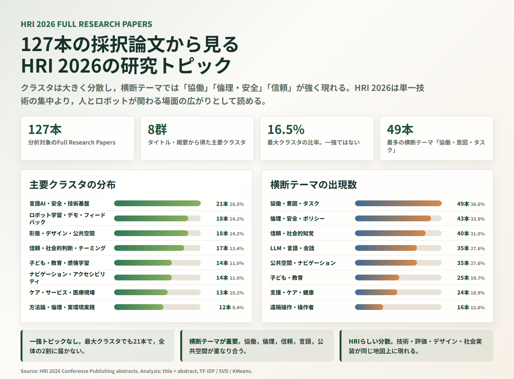
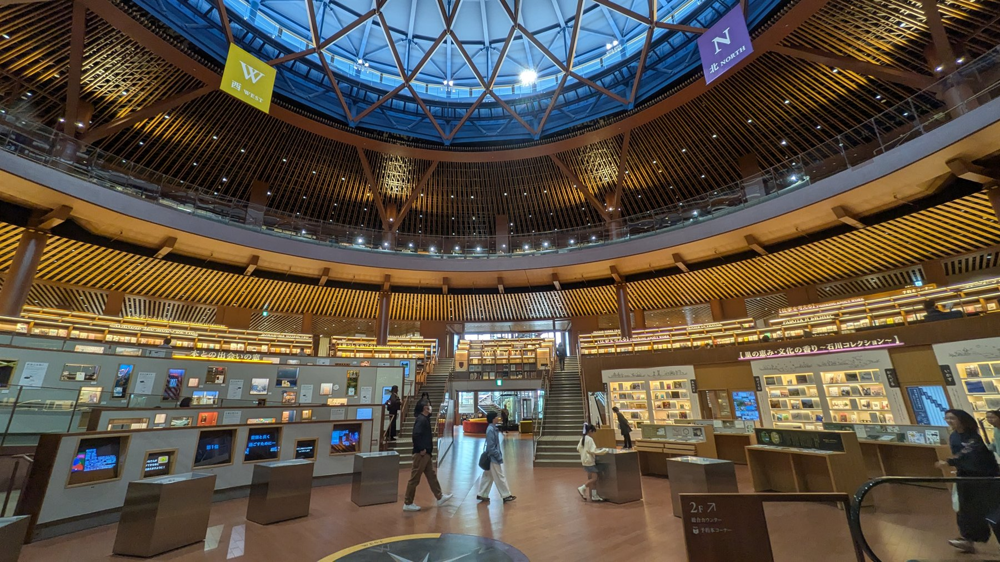
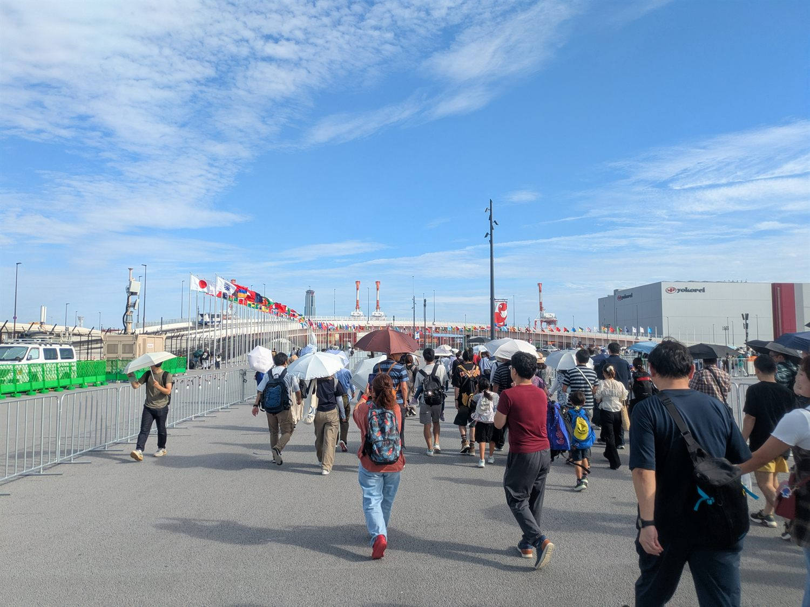
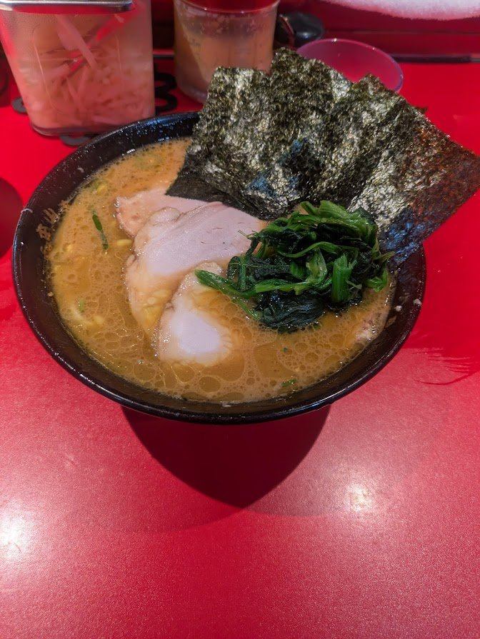
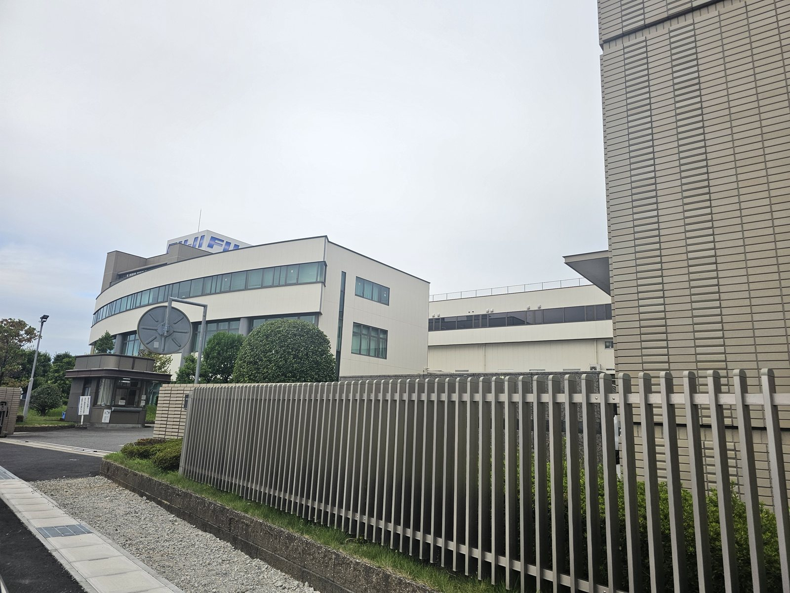
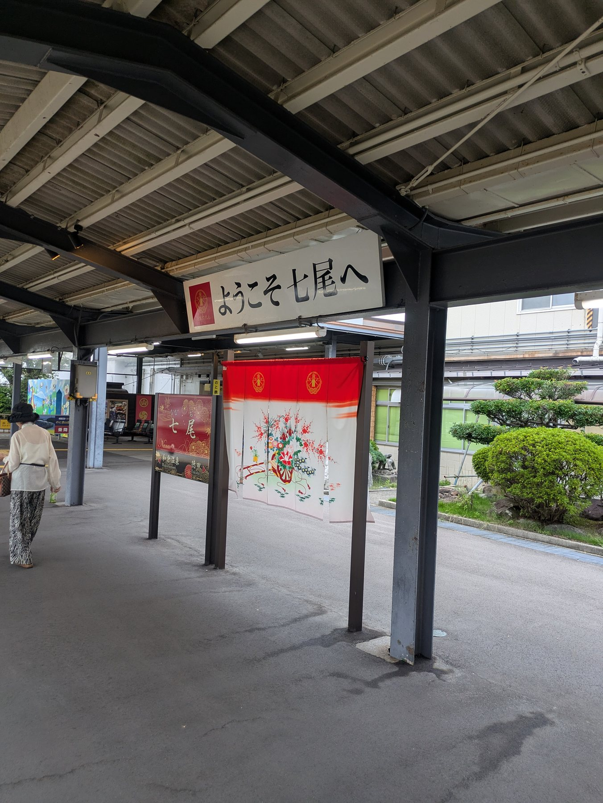
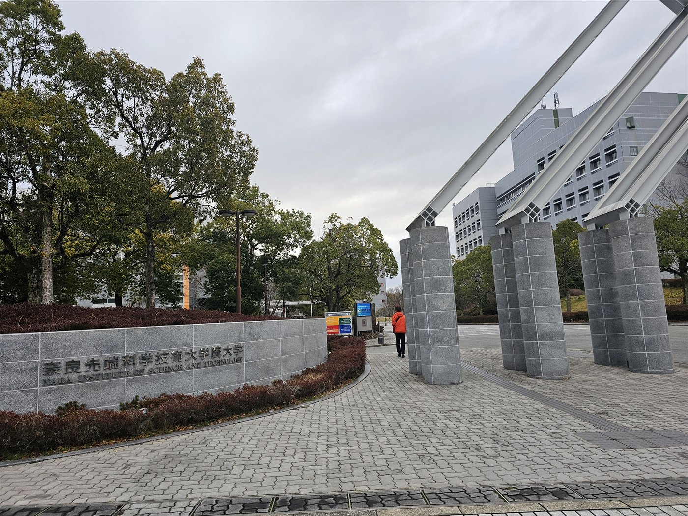
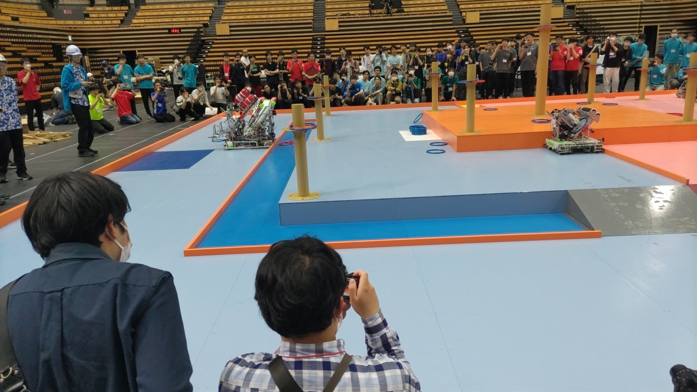
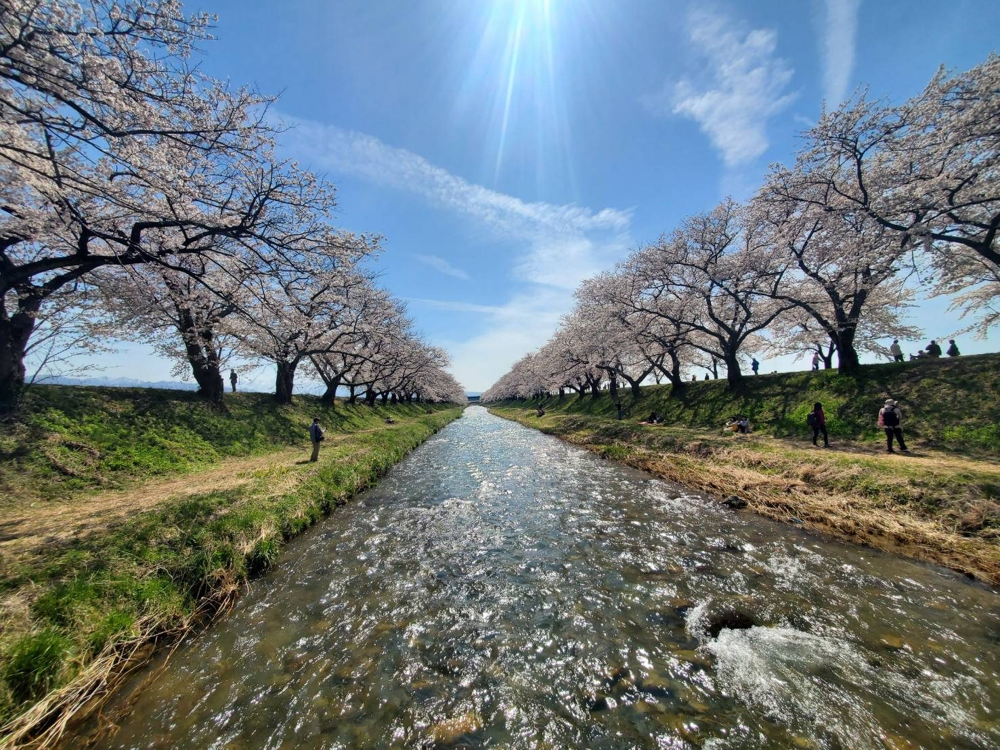
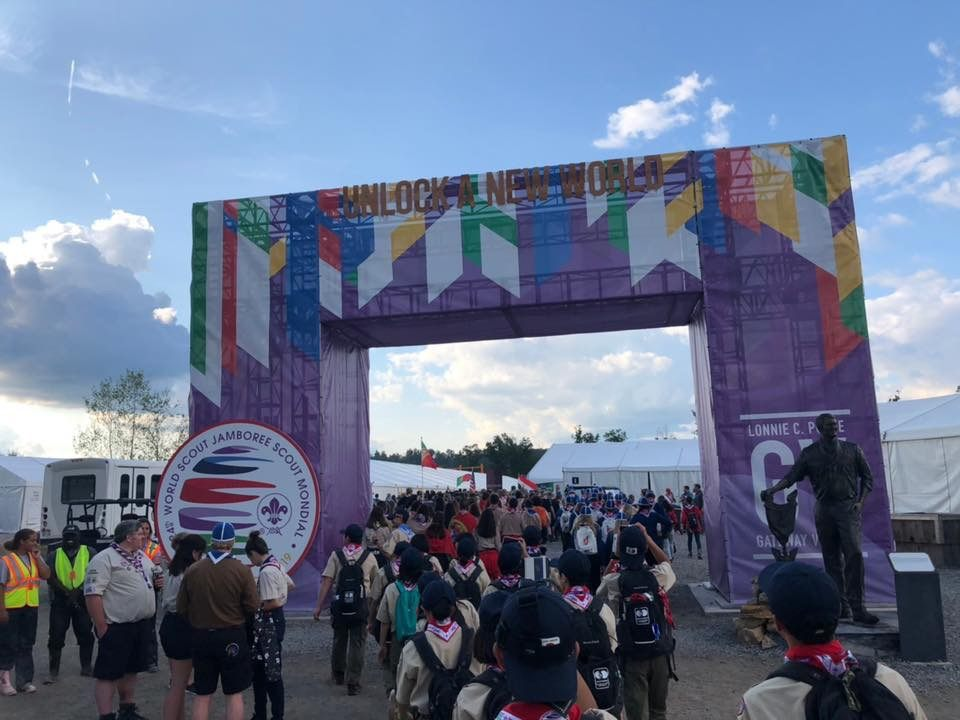

2025年4月 – 現在
北陸先端科学技術大学院大学 AI知性領域 博士前期課程
Human-Robot Interaction · JAIST
Sakuramoto Akihiro
北陸先端科学技術大学院大学 AI知性領域 博士前期課程
ヒューマンロボットインタラクション，社会的信号処理，マルチモーダルインタラクションを研究しています。実環境 HRI を対象に，人とロボットの相互行為の質を捉えることが関心の中心です。

I · Research
実環境 HRI を対象に，社会的信号処理とマルチモーダルインタラクションの観点から，人とロボットの相互行為を分析しています。とくに接客対話におけるラポール（関係の質）の推定を通じて，対話の質を定量的に評価することを目指しています。
II · Career
北陸先端科学技術大学院大学 AI知性領域 博士前期課程
サイバーエージェント AI Lab との共同研究。実店舗で収集された接客ロボット対話データを対象に，実環境HRIにおける対話品質評価の研究を推進。
石川県七尾市の一本杉商店街でインタビュー調査を行い，地域の課題や能登半島地震から得られた教訓を整理。現地で得られた知見をもとに，デジタルツインを用いた記録・伝承の可能性を検討し，最終レポートを作成。
車両性能領域「自動運転/先進運転支援性能実験（AD/ADAS）」に参加。（5日間）
クリームはんだ印刷機内で発生する不良のAI画像判定に取り組み，データ収集とアルゴリズム開発を経験。（3週間）
奈良先端科学技術大学院大学（NAIST）ロボットラーニング研究室 インターンシップ
強化学習を用いたロボット操作課題に取り組む。（約4週間）
富山大学ロボコンプロジェクトに所属し，ROS，C言語，Pythonを用いたロボット制御を担当。
米国で開催された世界スカウトジャンボリーに参加し，多国籍の参加者との共同生活・国際交流を経験。
III · Publications
実環境 HRI における対話の質評価に向けたマルチモーダル ラポール推定モデルの検討
画像の認識・理解シンポジウム（MIRU）, ポスター発表（査読なし）, 2026年8月
北陸先端科学技術大学院大学学生給付奨学金 一般採用
成績優秀のため採用, 2025–2026
IV · Projects
公開準備中（2026年秋予定）。
……資料は猫が持って行きました。
V · Gallery / Blog

2026年7月1日
Full Research Papers 127件のタイトルと概要から，研究トピックの広がりを整理しました。
2026年6月29日
研究，制作，日々の気づきを短く残していくための場所を追加しました。

2026
円形の書架が印象的な図書館と，滞在中の食事の記録。

2025年9月27日
大阪・関西万博を訪れた日の会場風景と食事の記録。

2025年9月
技術系インターンシップ期間中の記録。厚木での食事と，NISSANロゴの見える夜景。

2025年8月–9月
2025年度インターンシップ期間中の記録。AI画像判定の開発に取り組みました。

2025年9月
能登半島地震の教訓と伝承をテーマに，七尾市で行ったフィールドワークの記録。
2024年9月
越中八尾の街並み，ぼんぼりの灯り，踊りと舞台の記録。

2024年2月–3月
ロボットラーニング研究室でのインターン期間中に撮影した，NAISTキャンパスと滞在中の記録。

2023
富山大学ロボコンプロジェクトで参加した本選の記録。

2021年–2025年
在学中に撮影したキャンパス周辺，富山市内，食事の記録。

2019年8月
米国で開催された24WSJに参加した際の会場風景と食事の記録。
VI · Resources
VII · Contact / Links